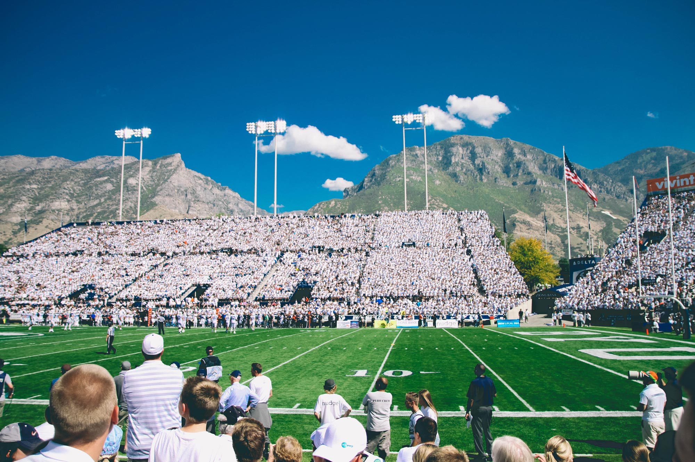
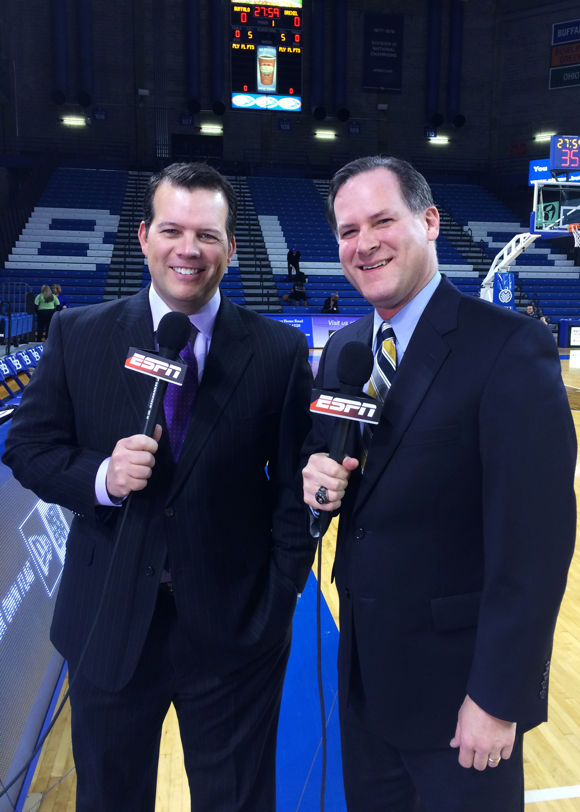

<!DOCTYPE html>
<html lang="en">
<head>
    <meta name="viewport" content="width=device-width, initial-scale=1">
    <meta charset="UTF-8">
    <title>Sylvester & Peck Media</title>
    <!-- <link rel="stylesheet" href="https://i.icomoon.io/public/temp/d7164769e0/UntitledProject/style.css"> -->
    <script src="https://use.fontawesome.com/825d01d0f3.js"></script>
    <script src="src/script.js"></script>
    <link href="https://fonts.googleapis.com/css?family=Roboto:100,300,400,400i,500,500i,900" rel="stylesheet">
    <link rel="stylesheet" href="style.css">
</head>
<body>

    <div id="wrapper">
<!-- HEADER -->
    <header>
      <div id="logo">
        <a href="index.html"></a>
      </div>
      <!-- SLIDESHOW -->
      <!-- <div class="w3-content w3-section">
        
        
        
        
      </div> -->
    </header>

<!-- END OF HEADER -->
<!-- NAVBAR -->

        <nav id="navbar">
          <!-- <div class="hamburger" id="hidenavbar">
            <i class="fa fa-navicon"></i>
          </div> -->
            <ul>
                <li><a href="about.html" class="mobile">About</a></li>
                <li><a href="mediacoaching.html" class="mobile">Media Coaching</a></li>
                <li><a href="eventhosting.html" class="mobile">Event Hosting</a></li>
                <li><a href="corporateprograms" class="mobile">Corporate Programs</a></li>
                <li><a href="contact.html" class="mobile">Contact</a></li>
            </ul>
        </nav>

<!-- END OF NAVBAR -->
<!-- CONTENT -->

        <!-- Edit Page Here -->

        <div class="content">
              <!-- <div id="paulkevin"></div> -->
              <div class="pagetext">
                  <h1>Sylvester & Peck, LLC</h1>
                  <p>Use our experience to your advantage…and navigate the ever-changing media world. With nearly 50 years of combined experience, Paul Peck & Kevin Sylvester have evolved and thrived in television, radio and all forms of media. Now, we can help you achieve and enhance your goals through one-one-one coaching, corporate group programs and event hosting.</p>
                  <div id="blurbs">
                  <div class="blurb">
                    <h2>Paul Peck</h2>
                    <p>Paul Peck is sports broadcaster with over 25 years experience in TV and Radio. He served as sports anchor, reporter, and producer at WIVB for 24 years. In that role, he covered all four Buffalo Bills Super Bowls, the Buffalo Sabres in the Stanley Cup Finals, the NCAA Basketball Tournament and the Daytona 500. He has been the Voice of the UB Bulls Football for 17 seasons, in addition to host of Bulls Athletics TV & Radio shows. Peck also served as the sideline reporter for the Buffalo Bills Football Network, host of the bowling show "Beat The Champ" and announces college basketball for ESPN 3 and Time Warner Cable Sports Channel. He has also been the Master of Ceremonies for the Greater Buffalo Sports Hall of Fame, one of the largest sports banquets in WNY.<br>Paul is also involved in the local business community, having been a financial advisor at AXA Advisors, and is currently the Vice President of Sports Development at VSP Graphics Group.</p>
                    
                  </div>
                  <div class="blurb">
                    <h2>Kevin Sylvester</h2>
                    <p>Kevin Sylvester has over 20 years of experience in media, working for stations, professional sports teams, leagues, and national broadcast entities. This experience includes being an announcer for NHL, NBA, NCAA Football, NCAA Basketball, NCAA Hockey, and The PGA Tour. Kevin also served as the producer for the Buffalo Sabres post-game show, executive producer for a Sabres radio show, and started his own media production company, All Square Media LLC in 2008. All Square Media serves as the executive producer of the Tee 2 Green TV and Radio shows (created by Kevin), handling distribution, sponsorship sales, fulfillment, and production of the shows.<br>Kevin's business background extends beyond broadcasting. He served as the Director of Amateur Athletics for WNY Arena LLC (Key Bank Center in Buffalo), procuring major amateur sporting events for Buffalo, NY. The major highlights include two sold out NCAA Tournaments First and Second Rounds (2007, 2010), and the 2011 IIHF U20 World Championships (Kevin co-wrote the winning bid, and served on the organizing committee for USA Hockey). Kevin created The Duster Challenge in 2016, a local 18 hole putting competition, and serves as an advisor to WNY golf ball company, OnCore Golf.</p>
                    
                  </div>
                  </div>
                </div>
        </div>

        <!-- Stop Edit Page Here -->

<!-- END OF CONTENT -->
<!-- FOOTER -->

        <footer>
          <div id="footercontent">
                <!-- <a href="mailto:sylvesterpeckmedia@gmail.com">sylvesterpeckmedia@gmail.com</a> -->
                © 2017 Sylvester & Peck Media, LLC, All Rights Reserved.
          </div>
        </footer>
<!-- END OF FOOTER -->
    </div>
    <!-- SLIDESHOW -->
    <!-- <script>
    var myIndex = 0;
    carousel();

    function carousel() {
        var i;
        var x = document.getElementsByClassName("mySlides");
        for (i = 0; i < x.length; i++) {
           x[i].style.display = "none";
        }
        myIndex++;
        if (myIndex > x.length) {myIndex = 1}
        x[myIndex-1].style.display = "block";
        setTimeout(carousel, 9000); //Change every 9 seconds
    }
    </script> -->
    <script src="src/script.js"></script>
</body>
</html>
